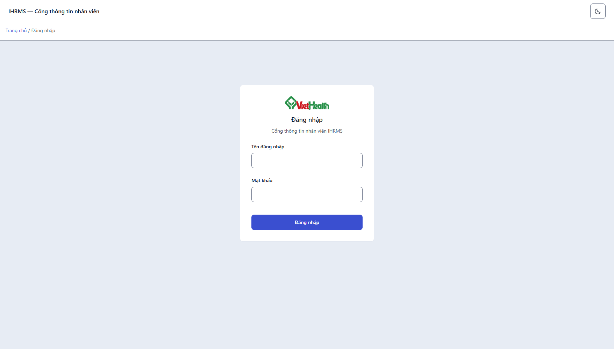

Đã đổi đúng màu, nhưng Phương án B thì chưa được làm
Bạn nhận xét đúng một nửa. Palette Chàm Đông đã vào CSS đúng cách (một nguồn token, đo tương phản đạt), nhưng không có hạng mục cấu trúc nào của Phương án B được hiện thực: vẫn sidebar 256px, không có command bar, KPI vẫn bốn thẻ rời, hàng bảng 69px. Ngoài ra còn ba bề mặt lệch màu mà Qoder bỏ sót — hai trong số đó tôi đã sửa trong lượt này.
Palette Chàm Đông
2/5 bề mặt còn lệch
Token CSS, manifest PWA: đạt. Bản xuất PowerPoint và Excel: đang là teal/xanh cũ — tôi đã sửa. Logo và icon ứng dụng: là tài sản thương hiệu, cần bạn quyết.
Phương án B — Không gian điều hành
1/7 hạng mục đạt
Chỉ bề rộng nội dung 1440px là đã đạt — và đạt từ trước, không phải nhờ đợt sửa này. Rail, command bar, KPI strip, tab trạng thái, toolbar dính, mật độ hàng, cỡ tiêu đề: chưa có.
Một lỗi tôi gây ra ở đợt trước, nay đã sửa: mobile_shell.css khai lại grid-template-columns cho .ui-form-grid, tạo nguồn thứ hai và làm đỏ FormGridComponentTests trên main — CI của commit 61a9380 fail vì đúng ca này. Đã bỏ khối đó (components.css đã có sẵn nền 1 cột và reset span dưới 640px), 21 test xanh trở lại.
Qoder đã làm gì
Một commit duy nhất 847997b (7 tệp) cộng một commit nhật ký 674376c. Toàn bộ nội dung là đổi giá trị màu, không đụng cấu trúc:
| Tệp | Thay đổi |
|---|---|
src/static/css/ui_tokens.css | Thay teal bằng indigo trong cả ba khối :root, [data-theme="dark"], prefers-color-scheme |
src/static/manifest.json | theme_color #3a4fd0, background_color #e7ecf4 |
DESIGN.md, design-system/MASTER.md, docs/UI_DESIGN_SYSTEM.md, docs/UI_DESIGN_SYSTEM_PHASE1.md | Cập nhật mô tả palette, bảng tương phản sinh lại |
docs/PROJECT_WORK_LOG.md | Nhật ký đợt palette + ghi nhận ca test đỏ có sẵn |
Điều Qoder làm đúng: không tạo trục [data-palette], không đổi cơ chế theme, không sửa base.html. Cách đổi này giữ đúng nguyên tắc một nguồn token.
Phương án B yêu cầu gì
Trích đúng đặc tả trong outputs/design-review-20261021/index.html — “Phương án B — Không gian điều hành”.
| Hạng mục | Đặc tả B | Đo trên ứng dụng thật (1756×1000) | Kết luận |
|---|---|---|---|
| Điều hướng | Rail 72px thay sidebar 256px | Sidebar 256px. Có trạng thái thu gọn 4.5rem = 72px nhưng là nút bấm tay, không phải mặc định | Chưa |
| Command bar | Một dòng, gõ để nhảy chức năng, Ctrl/⌘+K | Ô tìm kiếm nằm trong topbar; không có handler bàn phím nào trong src/static/js/ | Chưa |
| KPI | Gộp một dải, bớt khung | 4 thẻ .ui-card rời, mỗi thẻ một viền + một số. Component .ui-kpi-grid đã có nhưng dashboard không dùng | Chưa |
| Bề rộng nội dung | 1312px (B) / 1440px (A) | 1440px — --ui-content-max-width: 90rem. Lớp max-w-5xl còn trong base.html nhưng bị ghi đè, tức class chết | Đạt |
| Bảng danh sách | 8 cột không cuộn ngang ở 1756px, hàng 52–56px | Trang nhân viên có 6 cột và còn thừa bề rộng; hàng 69px — cao hơn mốc B 13–17px | Chưa |
| Toolbar / tab trạng thái | Toolbar dính trên cùng, tab trạng thái thay một phần bộ lọc | Thanh lọc 73px, position: static; không có tab trạng thái | Chưa |
| Tiêu đề trang | 28px | 24px | Lệch nhẹ |
Đo bằng Playwright trên DB giả dùng một lần, tài khoản demo-hr. Lệnh tái hiện ở cuối tài liệu.
Hiện trạng nhìn thấy được
Không phải ảnh mockup — ảnh chụp thật ở 1756×1000, đúng trạng thái main hiện tại.


Ba bề mặt lệch màu mà đợt sửa bỏ sót
| Bề mặt | Màu còn lại | Xử lý |
|---|---|---|
Bản xuất PowerPointreporting_slides.py |
TEAL 0B7461, MINT DDF3EB, PAPER F4F7F5, NAVY 0C233B, MUTED 4B6171, LINE D5E1DD, đỏ/hổ phách/xanh cũ |
Đã sửa sang đúng mã trong khối light của ui_tokens.css |
Bản xuất Excelreporting_dashboard.py |
BLUE 1D4ED8, LIGHT EFF6FF, DARK 0F172A, MUTED 64748B |
Đã sửa sang 3A4FD0 / EEF1FD / 101828 / 475467 |
Logo và icon ứng dụnglogo.png, ihrms-pwa-192/512.png |
Mark xanh lá #279048 trên nền #EFF6FF |
Chờ bạn quyết — đây là tài sản thương hiệu của tổ chức, không phải token giao diện. Tôi không tự đổi. |

Tôi đã sửa trong lượt này
| Tệp | Việc đã làm | Bằng chứng |
|---|---|---|
src/static/css/mobile_shell.css | Bỏ khối khai lại grid-template-columns cho .ui-form-grid — trả về đúng một nguồn là components.css | 21 test OK; layout audit chạy lại đủ ma trận: 150 route / 6.881 ca / 0 vi phạm / 0 lỗi |
src/apps/portal/reporting_slides.py | 9 hằng màu PowerPoint → Chàm Đông | test_report_palette + hai module báo cáo: 12 test OK |
src/apps/portal/reporting_dashboard.py | 4 hằng màu Excel → Chàm Đông | |
src/apps/portal/test_report_palette.py mới | Khoá hai module báo cáo phải khớp token trong ui_tokens.css; cấm mã teal/xanh cũ quay lại | Đổi token mà quên báo cáo là đỏ ngay |
Chưa commit. Palette và P0 đang ở main; bốn tệp trên để riêng một commit “sửa lỗi palette + CI” sau khi bạn xem.
Đã chạy lại sau khi sửa: run_layout_alignment_audit.py 150 route / 6.881 ca / 0 vi phạm, 0 lỗi (9 tài khoản × 7 độ rộng × sáng/tối) — việc bỏ override lưới không làm lệch bố cục ở bất kỳ độ rộng nào.
Để làm đúng Phương án B — chia ba đợt
Ba mục đầu nằm trong phạm vi MASTER đã duyệt nên làm được ngay. Hai mục cuối đụng quy chuẩn đã ký ngày 13/10, cần bạn duyệt riêng.
| Đợt | Nội dung | Tệp chính | Điều kiện |
|---|---|---|---|
| B1 2–3 ngày |
Rail 72px mặc định (giữ nút mở rộng), command bar một dòng + Ctrl/⌘+K, bỏ class chết max-w-5xl |
app_shell.css, base.html, app_shell.js, ui_tokens.css |
Trong MASTER |
| B2 3–4 ngày |
KPI gộp một dải; hàng bảng 52–56px; badge có chấm; tiêu đề trang 28px | components.css, partial dashboard/_metrics.html, 6 template danh sách |
Trong MASTER |
| B3 3–4 ngày |
Toolbar dính + tab trạng thái thay một phần bộ lọc; 8 cột không cuộn ở 1756px | components.css, ui/query_bar.html, 6 template danh sách |
Cần duyệt: lệch quy chuẩn dải lọc 13/10 |
| B4 2 ngày |
Form hai cột + rail ngữ cảnh cho form dài | ui/field.html, components.css, 43 template form |
Cần duyệt riêng |
| Kiểm thử mỗi đợt |
Layout audit 7 độ rộng × 2 theme, contrast, browser UAT, contact sheet trước/sau | ops/* |
Bắt buộc theo AGENTS.md |
Rủi ro phải nói trước: B1 đổi cấu trúc shell — tệp mà 196 template kế thừa. Nếu làm gộp một lượt với B2–B4 sẽ không quy được lỗi về đợt nào. Mỗi đợt một commit, chạy đủ cổng rồi mới sang đợt sau, đúng cách đã làm với P0.
Cần bạn chốt
- Có làm B không, và theo thứ tự B1 → B4 như trên? Nếu chỉ muốn phần “cảm giác ứng dụng”, B1 + B2 là đủ 80% hiệu quả.
- Duyệt tab trạng thái thay một phần bộ lọc (B3)? Đây là chỗ lệch quy chuẩn 13/10 — cần một câu đồng ý rõ ràng.
- Duyệt form hai cột (B4)? Hiện form đang một cột dưới 640px và 3–4 cột ở desktop; B4 chỉ đổi cách nhóm.
- Logo và icon ứng dụng: giữ mark xanh lá của tổ chức, hay tôi dựng biến thể đơn sắc indigo cho
ihrms-pwa-*.pngvà logo trên trang đăng nhập? - Mật độ bảng: tăng hàng từ 69px xuống 54px nghĩa là mỗi màn hình thấy thêm ~2 dòng nhưng chữ thoáng hơn — đồng ý không?